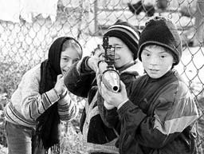

(Окончание. Начало в предыдущем номере)

|
Трагедия солдата — выбор между Богом и Командиром (Окончание. Начало в предыдущем номере) |
|
|
 |
|
| AP |
На прошлой неделе сразу в нескольких интернет-магазинах появились футболки
с портретом Эдуарда Ульмана. Товар пользуется спросом. Самый
востребованный слоган: “Ульман — мы с тобой!”. Но вообще-то за отдельную
плату надпись можно набить любую…
Капитан Главного разведывательного управления Министерства обороны Эдуард
Ульман и его трое сослуживцев, обвиняемые в расстреле шестерых мирных
чеченцев 11 января 2002 года в горной Чечне, оправданы на прошлой неделе
Военным судом Северо-Кавказского военного округа.
Обозреватель “МК” Вадим Речкалов встретился с Ульманом и провел
собственное расследование. Сегодня мы публикуем его вторую — и последнюю —
часть.
О том, что творилось в тот день на дороге, вскоре знал весь район.
Чеченцы, проезжавшие мимо разведчиков, видели и обстрелянную машину, и
номера на ней. На следующий день группе Ульмана приказали явиться на
Временный пункт управления, который находился неподалеку на горе Дайлам.
Ульман доложил все как было. Ребят вроде бы даже похвалили. Затем уже на
месте постоянной дислокации Ульмана, Воеводина и Калаганского вызвали к
прокурору. “О чем мне ему докладывать?” — спросил Ульман у своего
командира. “Доложи об “уазике”!” Ульман и доложил. Прокурор приказал
разведчикам сдать оружие. “Про Буданова слышали? — спросил прокурор. —
Будете новыми Будановыми”. Разведчики удивились, но особого страха не
испытали. Решили, что начальство разберется. Из группы в 12 человек к
ответственности привлекли только офицеров и прапорщика. Солдат не тронули.
Сначала разведчики находились в своей части в Борзое, вроде как под
домашним арестом, потом их посадили на гауптвахту.
— Сидели, ждали, пока разберутся. Все вчетвером, в отдельной камере. Двери
не закрывались. Выйдешь вечером, солдат с автоматом в коридоре спит.
Разбудишь его. Эй, боец, проснись, автомат украдут. А! Что? Спасибо,
товарищ капитан. А потом нас в тюрьму перевели, тогда уже разделили.
— Переодели?
— Нет. Мы так и сидели, как служили, — в горках, берцах, камуфлированных
свитерах, только без оружия. Относились к нам в общем-то нормально. Я там
познакомился с одним бывшим боевиком. Апти его звали. В первую кампанию
воевал, а теперь сидел за бытовое убийство. Он расспрашивать начал, кто я
да откуда. Я ему сразу сказал: про службу ничего говорить не буду. Ну, он
сам больше говорил. Нас, говорит, учили тому-то и тому-то — это правильно?
Да вроде, говорю, правильно. А еще, говорил Апти, нас инструкторы учили
вот этому. Ну, это полная ерунда, отвечал. Апти меня подкармливал, а
вообще отношения у нас были как между двумя ветеранами.
— А надзиратели как относились?
— В общем, как к быдлу. Тут важно было правильно себя поставить. Я когда
узнал, что подследственным и книжки можно получать с воли, и другие заказы
делать, стал права качать. Меня оперуполномоченный вызывает и начинает
орать: “Ты кто такой, ты что себе позволяешь!” А я ему говорю: “Я
армейский офицер, и дай тебе бог хоть когда-нибудь в жизни достичь уровня
армейского офицера”. А вообще я свое заключение воспринял как затянувшийся
боевой выход.
— Только приказы никто не отдает.
— Я сам их себе отдавал. И сам выполнял, не обсуждая. Отдал себе приказ —
не деградировать. Отжимался в камере. Но там воздуха мало — сорок
отжиманий, и задыхаешься. Четыре-пять подходов за сутки делал. Бегал в
прогулочном дворике. По кругу семнадцать шагов получалось, если бежать. По
два с половиной километра набегал за прогулку. Читал книги, фантастику в
основном, зубрил грамматику немецкого языка, эта книжка у меня с собой
была всегда, вспоминал наши ведомственные боевые инструкции и тоже их
повторял бесконечно. А вообще первые полгода меня ненависть душила, места
себе не находил. Я даже стал сомневаться в том, что все сделал правильно.
А потом случился теракт на Дубровке, и я успокоился. Как будто пелена с
глаз упала. Я понял, что прав, и успокоился.
— В том смысле, что этих чеченцев надо убивать без разбора?
— Нет. В том, что надо четко выполнять приказы. Почему стал возможен
теракт в “Норд-Осте”. Кто-то где-то не выполнил приказ. Там недосмотрел,
там поленился, там денег взял от бандитов. А в Чечне какая поговорка:
“Спецназ денег не берет”.
— А к делу Буданова вы как относитесь?
— Не знаю. По Буданову я не располагаю всей информацией, поэтому сказать
ничего не могу. Но с другой стороны, я не доверяю военной прокуратуре.
Меня она ударила в спину, а значит, и с Будановым могли поступить так же.
— Вы продолжаете служить. Случись вам поехать снова в Чечню, оказаться в
той же ситуации, вы опять поступите так же?
— Я уже не буду командовать группой, это пройденный этап, займу ступеньку
повыше. Но если ситуация повторится, постараюсь добиться письменного
приказа. Но в любом случае я буду обязан выполнить приказ. Вот представьте
армию как единый человеческий организм. Руководитель спецоперации — это
голова. А я рука. Очень жесткая рука, которая, не раздумывая, действует по
приказу.
— Теперь вы знаете, какой был общий замысел той спецоперации?
— Такой тупой организации спецоперации я не припомню. Этот самый полковник
Плотников, по моей информации, вообще военный экономист, такого за всю
чеченскую войну не было, чтобы спецоперацией руководил военный экономист.
Я не знал, что творится сбоку, сзади, спереди от меня. Взаимодействия с
другими частями никакого. Нас там чуть пехота на бронетранспортере не
задавила. Я им говорю: ребята, туда не стреляйте, там мы работаем. А они
мне отвечают: а вы своим скажите, чтоб они вон туда не стреляли — там мы,
а третьи говорят: не стреляйте туда. И так друг другу передают. Слоеный
пирог, непонятно, как друг друга не перебили. Если бы операция была
подготовлена, то, может, и засада у меня была в другом месте, подорвал бы
дерево пластитом, дорогу перегородил естественным препятствием. Жалко, что
люди пострадали. Жалко.
— Вы б хоть извинились перед родственниками убитых. Вот прямо сейчас через
газету.
— Не могу. Пробовали мы извиняться, не приняли они наших извинений. И
сейчас не могу. Это будет воспринято как лицемерие.
Если проанализировать хронологию действий разведгруппы специального
назначения №513, которой командовал капитан Ульман, станут очевидными
многие нестыковки, оправдывающие разведчиков. Присяжные потому и вынесли
оправдательный вердикт, что им в течение нескольких месяцев очень подробно
рассказывали в суде, как было дело.
Начнем с боевой задачи, которая была поставлена капитану. Суд установил,
что ему действительно приказали организовать не блокирование дороги, а
засаду в конкретном месте, а значит, подразумевалось, что на этом участке
дороги никто, кроме противника, оказаться не может. Здесь ошибка
руководителей операции очевидна. Если дорога обычная и по ней может ездить
кто угодно, значит, нужна не засада, а блокирование ОМОНОМ, а Ульман со
своими бойцами мог скрытно прикрывать омоновцев. Кроме того, руководители
могли полностью блокировать село Дай, где, по их предположению, находился
Хаттаб, и тогда до засады Ульмана вообще бы никто из мирных не доехал,
всех остановили бы на временных блокпостах еще на выезде из села.
Версия обвинения выглядит так, что спецназовцы решили скрыть свою ошибку,
и поэтому всех уничтожили, а машину сожгли. Но тогда непонятно, почему они
не сделали это сразу, а сначала оказали раненым помощь (этот факт также
установило обвинение), а потом еще ждали не менее двух часов и только
после этого расстреляли задержанных. Чего они ждали? Очевидно, приказа. И
такой приказ поступил от оперативного офицера Алексея Перелевского. Сам он
говорит, что передавал приказы Плотникова. Но по версии обвинения, он
отдал этот приказ по собственной инициативе.
И вот тут есть серьезная психологическая неувязка. Алексей Перелевский не
руководил спецоперацией и не принимал участие в задержании “уазика”, а
только обеспечивал связь разведгруппы с руководителем спецоперации. Зачем
ему брать на себя такую ответственность и отдавать явно преступный приказ?
Ему лично ничего не угрожало, и он никого не убил, ему не надо было
заметать следы. Предположим, что Алексей Перелевский все-таки пошел на это
просто как заместитель командира бригады ГРУ, чтобы скрыть ошибку своих
коллег. Но тогда его действия выглядят крайне нелогично. Зачем он
приказывает спецназу в открытую стоять на дороге, досматривать машины, и
даже после расстрела людей оставаться на месте? Таким образом, мотив
преступления, на котором настаивает обвинение, выглядит несостоятельным.
Обвинение говорит, что спецназовцы хотели скрыть свою ошибку, и как будто
забывает о том, что при этом разведчики действовали практически на глазах
у всей округи.
Если же предположить, что приказы исходили от руководителя спецоперации,
то картина выглядит куда более правдоподобной. Предположим, полковник
Плотников, осознав, что мирные чеченцы пострадали исключительно из-за
скверной организации спецоперации, а значит, по его вине, решил замести
следы силами спецназа, а когда этого не получилось — просто отказался от
своих приказов, тем более, что они были устными. Логично также
предположить, что такое решение руководитель операции не стал принимать в
одиночку, а согласовал с руководством группировки.
Будучи вызванным в суд в качестве свидетеля, полковник Плотников выглядел
очень неубедительно. В частности, он заявил, что в данной операции группы
спецназа подчинялись не ему, а начальнику разведки ОГВ(С), а в его
обязанности входила только организация проверки паспортного режима у села
Дай. Он не припомнил того, что Перелевский докладывал ему об уничтожении
“уазика”, однако допустил, что, “возможно, ставил задачи по блокированию
села одной из групп спецназа”. Из слов Плотникова следовало, что у него
как у руководителя операции не было никаких полномочий, что выглядит
неправдоподобно. Но даже если допустить, что Плотников был не единственным
руководителем этой операции, то почему не установлен высокопоставленный
офицер, который все-таки отдавал приказы Ульману, тот же начальник
разведки ОГВ(С) или еще кто-то?
А доказательством искренности самого Ульмана служит тот факт, что он
выполнил не только преступный приказ, преступность которого не была для
него очевидной, но и два других приказа, — организовал досмотр проезжающих
машин и не сменил место дислокации даже после того, как один из
задержанных сбежал. Эти два последних приказа явно угрожали жизни Ульмана
и жизни его бойцов. И тем не менее Ульман их выполнил.
Кстати, никакого результата этой спецоперацией группировка не добилась.
Позже выяснилось, что Хаттаб со своими головорезами покинул село еще
накануне.
Сразу после вынесения оправдательного приговора главный военный прокурор
России заявил: “Ни у кого в России и у тех, кто интересуется этим делом за
рубежом, нет никаких сомнений в том, что совершено злодеяние. То, что суд
присяжных оправдал действия Ульмана и его подчиненных, к вопросам
правосудия не имеет отношения. Речь идет о совести, о правосознании
россиян”.
Военная прокуратура намерена все-таки посадить Ульмана, и если обвинению
удастся обжаловать приговор, то многое будет зависеть от того, какую
позицию займет прокуратура. Если присяжные в третий раз оправдают
спецназовцев, суд превратится в фарс и ситуация зайдет в тупик.
Попробуем разобраться, что произошло. Считается, что “дело Ульмана”
продемонстрировало всему миру жестокость отдельных российских военных по
отношению к мирному населению. Однако это дело принципиально отличается от
других злодеяний типа “дела Буданова” и массы ему подобных. Спецназовцы
находились на боевой задаче, были трезвы и не допустили никакой
самодеятельности. Ульман послушно действовал в рамках целой системы, не
отступая от ее требований ни на йоту, и невольно продемонстрировал всем,
что может случиться, если беспрекословно выполнять приказы этой системы.
Фактически “дело Ульмана” показало, насколько опасен для нашей армии
дисциплинированный воин, готовый выполнить любой приказ. Опасен потому,
что этот приказ порой оказывается бесчеловечным и глупым. Ульману бы
наплевать на приказы начальства и не выполнять свой долг с таким рвением,
и все бы обошлось. Разведчики спокойно пропустили бы “уазик”, так как
вышестоящие командиры использовали их явно по-дурацки, заставив исполнять
две взаимоисключающие задачи — блокирование дороги и засаду. И, уж
конечно, никогда бы не стали просто так расстреливать безоружных.
Разведчики бы втирали очки своим командирам по рации, а сами бы
действовали автономно, заботясь не об общем замысле руководителя, а
исключительно о собственной безопасности. И тогда бы преступность и
бестолковость высоких приказов компенсировалась их невыполнением. Но, на
беду, разведчики оказались настоящими военными, мощным и холодным оружием
в неумелых руках.
И присяжные это поняли. Поэтому они не хотят наказывать разведчиков.
Но куда девать шестерых убитых? Кого наказать за это? Ведь если это
убийство останется безнаказанным, то можно считать, что все усилия
федерального центра по установлению относительного порядка в Чечне
оказались напрасными. Все эти референдумы, выборы, восстановления,
компенсационные выплаты. Госсовет Чечни требует отменить оправдательный
вердикт, президент республики Алханов называет его незаконным,
вице-премьер Кадыров говорит, что присяжные “возбудили в обществе мысль о
полной слепоте закона...”. Но дело даже не в официальной реакции чеченских
властей. Если российский суд оставит безнаказанным это убийство, то в
руках у еще действующего террористического подполья окажется мощный
идеологический козырь, который позволит им вербовать в свои ряды новых
членов из среды чеченской молодежи. Полуторатысячный митинг прошел в
Грозном сразу после вынесения вердикта присяжных. Тут древний обычай
кровной мести может быть умело использован бандитскими пропагандистами.
Вряд ли бандиты сумеют достать профессионала Ульмана, но дело даже не в
нем. Оправдательный вердикт выносили присяжные, то есть представители
российского общества. А значит, это общество и является кровным врагом
чеченцев. Значит, если виновных не наказать, то уже, казалось бы,
подавленный вооруженный мятеж в Чечне может вспыхнуть с новой силой. Все
это понимают, и можно предположить, что на Эдуарда Ульмана существует
политический “заказ”. Поэтому и главный военный прокурор, забыв, что он
юрист, утверждает, что суд присяжных “не имеет отношения к правосудию”.
Но если власть после двух оправдательных приговоров все-таки посадит
Ульмана, будет еще хуже. Власть противопоставит себя элите российской
армии — действующим и бывшим офицерам спецназа ГРУ, высокопрофессиональным
диверсантам...
У власти есть только один выход из сложившейся ситуации. Она во что бы то
ни стало должна установить человека в Объединенной группировке войск на
Кавказе, который отдал Ульману преступный приказ. Будь это полковник
Плотников или даже сам командующий группировки. И надолго его посадить.
Выяснить, кто спланировал ту спецоперацию таким образом, что засады
разведчиков были выставлены на дороге, по которой продолжали ездить мирные
граждане, и с позором выгнать его из армии за непрофессионализм.
Перетрясти всю группировку и внятно назвать причины, по которым погибли
водитель Хамзат Тугуров, лесник Шахбан Бахаев, завуч школы Абдул-Ваххаб
Сатабаев, пенсионерка Зайнаб Джаватханова, ее племянник Джамулай Мусаев и
директор Нохч-Келойской школы Саид Аласханов, старик семидесяти лет.
Все это кажется невероятным, потому что никакая власть не станет
возбуждать уголовное дело против себя. Проще свалить вину на
исполнительного капитана и двух его подчиненных, действовавших, как
написано в приговоре, “в соответствии с субординацией и ложно понятым
чувством товарищества”.
|
Московский Комсомолец от31.05.2005 |
Вадим РЕЧКАЛОВ |